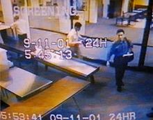
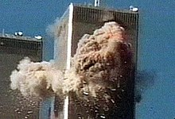

Home
Történet
Következmények
Repülők
Különleges képek
Videók
Különleges képek az eseményről
A tűzoltók a támadás helyszínén
Kamera felvétel a terroristákról

Az égő ikertornyok
Az összedőlt épületek
Robbanó épület
